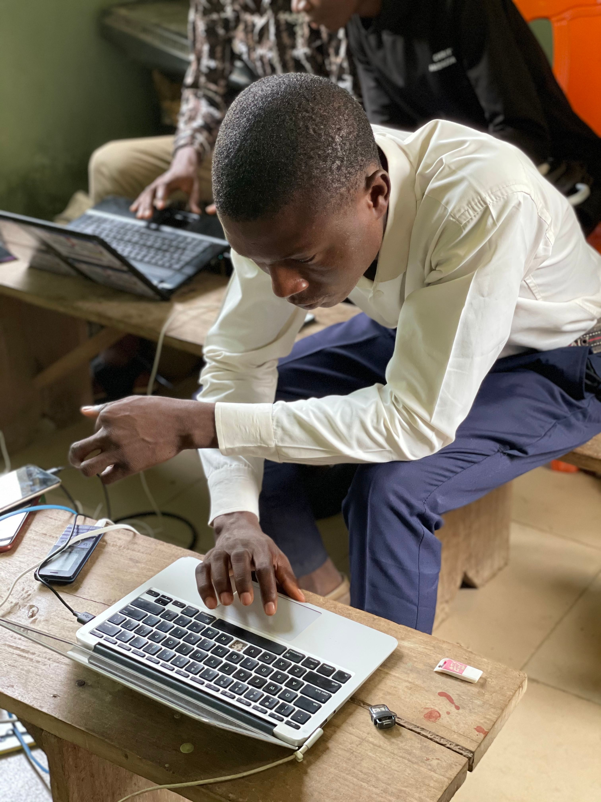

Skills Development

Skills development helps young people gain knowledge and practical abilities that can improve their chances of finding employment or starting their own businesses.
Young people in Kampala can improve their opportunities by learning new skills and developing the abilities needed in today's workplace.
Important Skills for Employment
- Computer skills: Using computers, email and office applications.
- Communication: Expressing ideas clearly and listening to others.
- Problem-solving: Finding practical solutions to challenges.
- Teamwork: Working respectfully with other people.
- Entrepreneurship: Identifying business opportunities and planning a business.
- Technical skills: Learning practical abilities related to a chosen career.
Where to Learn New Skills
- Directorate of Industrial Training (DIT): Visit DIT
- Refactory: Explore technology training
- Coursera: Explore online courses
- Google Skillshop: Explore digital skills training
Training costs, entry requirements and course availability may differ. Always confirm details with the training provider.
Why Skills Development Matters
Learning new skills can help young people become more confident, improve their performance at work and prepare for different employment opportunities.